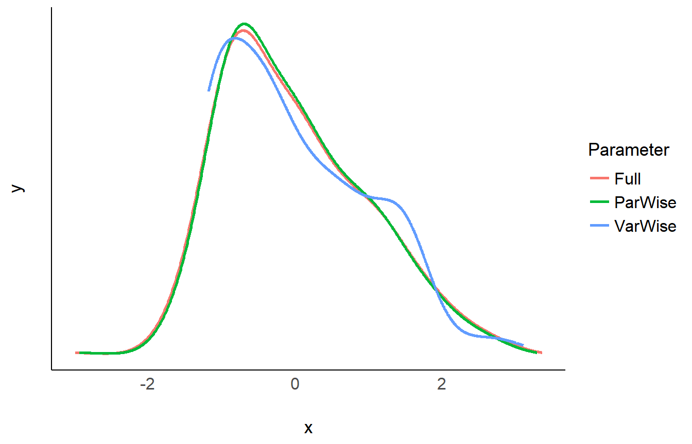
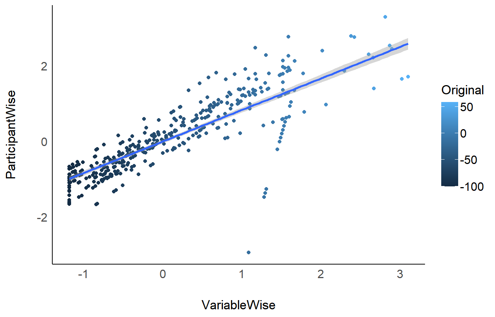

standardize_data.RmdTo make sense of their data and effects, scientists might want to standardize (Z-score) their variables. They become unitless, expressed only in terms of deviation from an index of centrality (e.g., the mean or the median). However, aside from some benefits, standardization also comes with challenges and issues, that the scientist should be aware of.
Standardization is an important step and extra caution is required in repeated-measures designs, in which there are three ways of standardizing data:
Unfortunately, the method used is often not explicitly stated. This is an issue as these methods can generate important discrepancies (that can in turn contribute to the reproducibility crisis). Let’s investigate these 3 methods.
We will take the emotion dataset in which participants were exposed to negative pictures and had to rate their emotions (valence) and the amount of memories associated with the picture (autobiographical link). One could make the hypothesis that for young participants with no context of war or violence, the most negative pictures (mutilations) are less related to memories than less negative pictures (involving for example car crashes or sick people). In other words, we expect a positive relationship between valence (with high values corresponding to less negativity) and autobiographical link.
Let’s have a look at the data, averaged by participants:
library(dplyr)
# Download the 'emotion' dataset
load(url("https://raw.github.com/neuropsychology/psycho.R/master/data/emotion.rda"))
# Discard neutral pictures (keep only negative)
df <- emotion %>%
filter(Emotion_Condition == "Negative")
# Summary
df %>%
group_by(Participant_ID) %>%
summarise(n_Trials = n(),
Valence_Mean = mean(Subjective_Valence, na.rm=TRUE),
Valence_SD = sd(Subjective_Valence, na.rm=TRUE),
Autobiographical_Link_Mean = mean(Autobiographical_Link, na.rm=TRUE),
Autobiographical_Link_SD = sd(Autobiographical_Link, na.rm=TRUE))As we can see from the means and SDs, there is a lot of variability between and within participants (between their means and their individual SD).
Let’s see how these three standardization techniques affected the Valence variable.
# Create a convenient function to print
print_summary <- function(data){
paste0(
paste0(deparse(substitute(data)), ": "),
paste(round(mean(data[["Subjective_Valence"]]), 3),
"+-",
round(sd(data[["Subjective_Valence"]]), 3)),
paste0(" [",
round(min(data[["Subjective_Valence"]]), 3),
",",
round(max(data[["Subjective_Valence"]]), 3),
"]")
)
}
# Check the results
print_summary(Z_VariableWise)[1] "Z_VariableWise: 0 +- 1 [-1.178,3.101]"[1] "Z_ParticipantWise: 0 +- 0.98 [-2.933,3.293]"[1] "Z_Full: 0 +- 1 [-2.992,3.36]"The means and the SD appear as fairly similar (0 and 1)…
library(bayestestR)
library(see)
data.frame(VarWise = Z_VariableWise$Subjective_Valence,
ParWise = Z_ParticipantWise$Subjective_Valence,
Full = Z_Full$Subjective_Valence) %>%
estimate_density(method="kernSmooth") %>%
plot() +
see::theme_modern()
and the distributions appear to be similar…
# Create convenient function
print_participants <- function(data){
data %>%
group_by(Participant_ID) %>%
summarise(Mean = mean(Subjective_Valence),
SD = sd(Subjective_Valence)) %>%
mutate_if(is.numeric, round, 2) %>%
head(5)
}
# Check the results
print_participants(Z_VariableWise)# A tibble: 5 x 3
Participant_ID Mean SD
<fct> <dbl> <dbl>
1 10S -0.05 1.15
2 11S -0.46 1
3 12S -0.03 0.72
4 13S -0.19 0.64
5 14S -0.01 0.71# A tibble: 5 x 3
Participant_ID Mean SD
<fct> <dbl> <dbl>
1 10S 0 1
2 11S 0 1
3 12S 0 1
4 13S 0 1
5 14S 0 1# A tibble: 5 x 3
Participant_ID Mean SD
<fct> <dbl> <dbl>
1 10S 0 1.02
2 11S 0 1.02
3 12S 0 1.02
4 13S 0 1.02
5 14S 0 1.02Ok so there are some differences here….
Let’s do a correlation between the variable-wise and participant-wise methods.
Pearson's product-moment correlation
data: Z_VariableWise$Subjective_Valence and Z_ParticipantWise$Subjective_Valence
t = 35, df = 454, p-value <2e-16
alternative hypothesis: true correlation is not equal to 0
95 percent confidence interval:
0.82 0.87
sample estimates:
cor
0.85 data.frame(Original = df$Subjective_Valence,
VariableWise = Z_VariableWise$Subjective_Valence,
ParticipantWise = Z_ParticipantWise$Subjective_Valence) %>%
ggplot(aes(x=VariableWise, y=ParticipantWise, colour=Original)) +
geom_point() +
geom_smooth(method="lm") +
see::theme_modern()
While the three standardization methods roughly present the same characteristics at a general level (mean 0 and SD 1) and a similar distribution, their values are not exactly the same!
Let’s now answer to the original question by investigating the linear relationship between valence and autobiographical link. We can do this by running a mixed model with participants entered as random effects.
library(lme4)
library(parameters)
# Convenient function
print_model <- function(data){
type_name <- deparse(substitute(data))
lmer(Subjective_Valence ~ Autobiographical_Link + (1|Participant_ID), data=data) %>%
parameters() %>%
filter(Parameter == "Autobiographical_Link") %>%
mutate(Type = type_name,
Coefficient = round(Coefficient, 3),
p = round(p, 3)) %>%
select(Type, Coefficient, p)
}
# Run the model on all datasets
rbind(print_model(df),
print_model(Z_VariableWise),
print_model(Z_ParticipantWise),
print_model(Z_Full))Type | Coefficient | p
---------------------------------------
df | 0.09 | 0.173
Z_VariableWise | 0.07 | 0.173
Z_ParticipantWise | 0.08 | 0.080
Z_Full | 0.08 | 0.080As we can see, variable-wise standardization only affects the coefficient (which is expected, as it changes the unit), but not the test statistics (the p-value, in this case). However, using participant-wise standardization does affect the coefficient and the p-value. No method is better or more justified, and its choice depends on the specific case, context, data and goal.
We showed here yet another way of sneakily tweaking the data that can change the results. To prevent its use for bad practices (e.g., p-hacking), we can only support the generalization of open-data, open-analysis and preregistration**